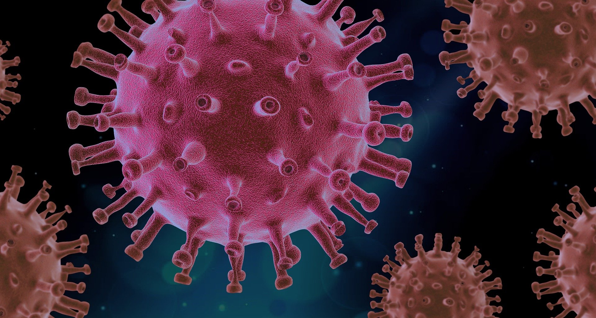

- COMBAT COVID-19
- CONTACT
- SYMPTOMS
- PREVENTION
- ABOUT
- HOME

About Covid - 19

Coronavirus disease (COVID-19) is an infectious disease caused by a newly discovered coronavirus. A coronavirus is
a kind of common virus that causes an infection in your nose, sinuses, or upper throat. Most coronaviruses aren't dangerous. In early 2020, after a December 2019 outbreak in China, the World Health Organization identified SARS-CoV-2 as
a new type of coronavirus. The outbreak quickly spread around the world. COVID-19 is a disease caused by SARS-CoV-2 that can trigger what doctors call a respiratory tract infection. It can affect your upper respiratory tract (sinuses,
nose, and throat) or lower respiratory tract (windpipe and lungs). It spreads the same way other coronaviruses do, mainly through person-to-person contact. Infections range from mild to deadly SARS-CoV-2 is one of seven types of coronavirus,
including the ones that cause severe diseases like Middle East respiratory syndrome (MERS) and sudden acute respiratory syndrome (SARS). The other coronaviruses cause most of the colds that affect us during the year but aren’t a serious
threat for otherwise healthy people.
What variants of concern have been found?
The World Health Organization (WHO) recently announced a nomenclature system for naming and tracking SARS-CoV-2 that will assist in the public discussions of variants as they emerge.
This nomenclature system was developed by virological, microbial, nomenclature, and communication specialists from around the world to ensure that the SARS-CoV-2 variants are easy to pronounce and avoid any potentially stigmatizing terms.
To this end, the expert group convened by WHO has recommended using letters of the Greek alphabet as names for each new SARS-CoV-2 variant.
B.1.351 lineage(Alpha variant) One new strain with a particularly large number of mutations was first noted in the United Kingdom in September 2020, termed VOC 202012/01 (a variant of concern – December 2020). The B.1.1.7 variant
is also known as 20B/501Y.V1 by the United States Centers for Disease Control and Prevention (CDC), as well as the Alpha variant according to the WHO. This strain, which has since been termed the B.1.1.7 variant, has a total of 23 mutations
with 17 amino acid changes.
strain has the following key mutations: N501Y P681H H69-V70 and Y144/145 deletions
P.1 lineage (Gamma variant) The P.1 lineage of SARS-CoV-2, which is also known as 20J/501Y.V3 or the Gamma SARS-CoV-2 variant, was first described in Japan by the National Institute of Infectious Diseases, thought to have arrived
in the country from Brazil on the 6th of January. The variant has been traced back to Manaus, Brazil. The strain is not thought to be more deadly but is more transmissible than the original strain of SARS-CoV-2. The P.1 strain has the
following key mutations: N501Y K417T E484K
B.1.427/B.1.429 lineage CAL.20C variant (Epsilon variants) The CAL.20C variant which spans the B.1.427 and B.1.429 lineages is believed to have emerged in California in May of 2020. Both of these variants, which are collectively
termed as the Epsilon variants, are believed to be 20% more infectious than preexisting variants strains although does not seem to be spreading as fast as some variants like the B.1.1.7.
B.1.525 (Eta variant) and B1.526 (Iota variant) lineages In December of 2020, the B.1.525 variant, which is otherwise known as the Eta variant, was first found to be spreading throughout New York City. Like the B.1.1.7 lineage
of SARS-CoV-2 variants, the B.1.525 variant also appears to have the same E484K mutation and the H69-V70 deletion. In addition to these mutations, the B.1.525 variant lineage also carries the Q677H mutation.
B.1.617 lineage (Kappa and Delta variants) The B.1.617 strain has been dubbed the “double mutant virus” due to two of the concerning mutations it carries. These two key mutations are: E484Q L452R The rapid rate at which this variant
has spread across India indicates to some scientists that this variant is highly transmissible. This observation is largely due to the fact that the B.1.617 variant appears to have a greater prevalence as compared to the other variants
that have been detected in India, such as the B.1.618 variant that was originally present in West Bengal.
For more details CLICK HERE